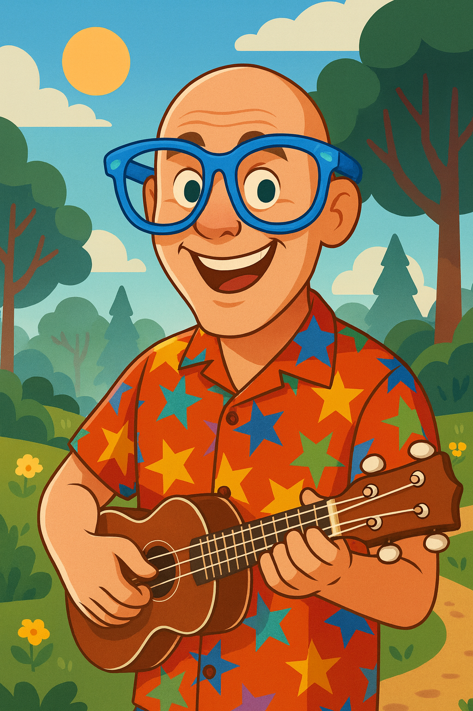
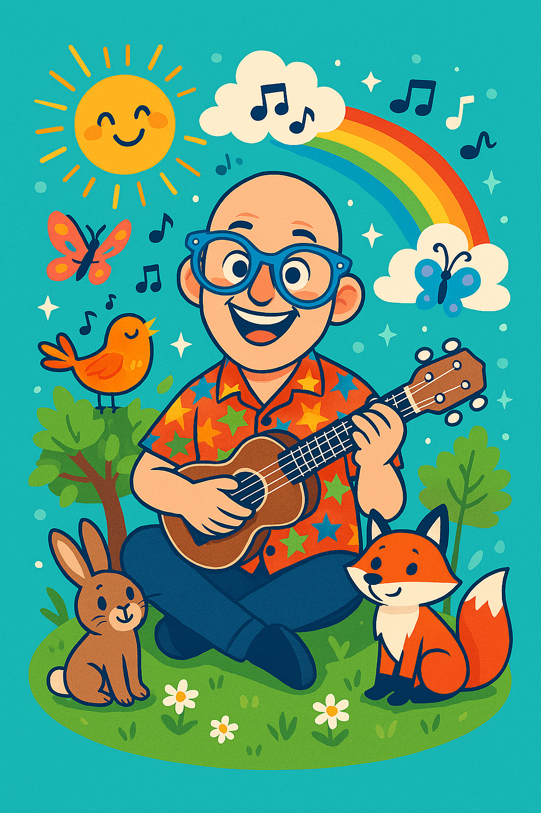

Veselé ukulele písničky pro děti
ŠvandaBanda je dětský zpěvák a hráč na ukulele, který baví děti ve věku od 8 do 12 let. Jeho koncerty jsou plné smíchu, jednoduchých melodií a chytlavých refrénů, které si děti zpívají ještě dlouho po vystoupení. Připoj se k jeho hudební jízdě a objev svět zábavných písniček!
Nadcházející akce
27. 11. 2025 – Praha – Školní vystoupení
Veselé dopoledne plné hudby, soutěží a společného zpívání. Koncert je určen pro žáky druhého stupně.
5. 12. 2025 – Brno – Mikulášská show
Speciální předvánoční program pro děti a rodiče. Ukulele, koledy a taneční soutěž.
15. 12. 2025 – Ostrava – Vánoční koncert
Program plný zimních písniček, vánočních melodií a ukulele hitů.
10. 1. 2026 – Plzeň – Novoroční vystoupení
Nový rok začíná hudbou! ŠvandaBanda představí několik nových písniček.
Ukázky tvorby
YouTube: https://youtube.com/ukulele-zabava
Modrý den
Melodický song o kamarádech a dobré náladě.
YouTube: https://youtube.com/modry-den
Hraju si rád
Písnička o tom, jak je super tvořit vlastní hudbu a zpívat nahlas.
YouTube: https://youtube.com/hraju-si-rad
Ukulelový výlet
Písnička o výletu s uklele do lesa a poznání zpívající přírody
YouTube: https://youtube.com/ukulelový-výlet
Galerie




Pro všechny malé fanoušky ŠvandaBandy:
Fanouškovská pošta: napiš svůj vzkaz nebo otázku
Fan art: nakresli ŠvandaBandu nebo jeho ukulele a pošli nám obrázek
Soutěž: vymysli vlastní krátký refrén — nejlepší nápad bude zhudebněn
Tipy pro hudebníky: jednoduché akordy k některým písničkám
Kontakt
Chceš ŠvandaBandu na školní akci, dětský den nebo festival?
E-mail: svandabanda@hudba.cz
Instagram: @svandabanda
TikTok: @svandabanda_official